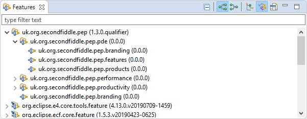
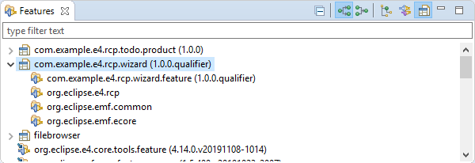
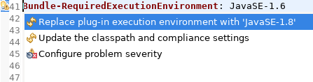
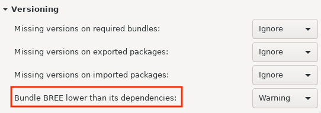
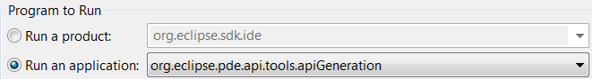
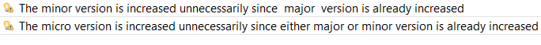
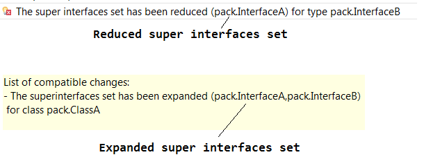

Here are descriptions of some of the more interesting or significant changes made to the Plug-in Development Environment (PDE) for the 4.14 release of Eclipse. They are grouped into:
Dialogs, Wizards and Views |
|
| Target Platform in Features view |
Using the Features view you can now view the structure of features in the target platform in addition to the ones in your workspace projects.
Features from workspace projects are shown first, followed by the ones from the target platform.  |
| Products in Features view |
You can now view the structure of product configurations using the Features view.
 |
| Improved launch configuration persistence | The file format of Eclipse Application, JUnit Plug-in Test and OSGi Framework launch configurations was updated to make them more SCM friendly. |
Editors |
|
| Detect bundle's BREE lower than its dependencies |
A warning will now appear in the Plug-in manifest editor when a bundle's dependency requires a higher execution environment than what is currently set.
The provided quick fix can automatically set the appropriate execution environment.  A new PDE compiler preference Bundle BREE lower than its dependencies has been added to configure the severity of the problem. By default, it is set to warning.  |
API Tools |
|
| Application to generate API descriptor manifest |
In addition to the legacy Ant tasks, PDE now provides a direct Eclipse application to generate API manifest
(typically .api_description files).
The Application id is This application can also be run using the Eclipse launch configuration UI and selecting org.eclipse.pde.api.tools.apiGeneration application as shown below. The required arguments should be specified in the program arguments.  |
| Report unnecessary change in minor and micro version |
In addition to reporting minor version change without API changes, API tools now also reports the following unnecessary
minor and micro version change.
 The preference option Report minor version change without API changes has been renamed to Report unnecessary minor or micro version change. |
| Expanded or reduced super interface API tool error has details |
The API tool error Expanded or reduced super interface now mentions which interface was added or removed
from the super interfaces hierarchy.
 |